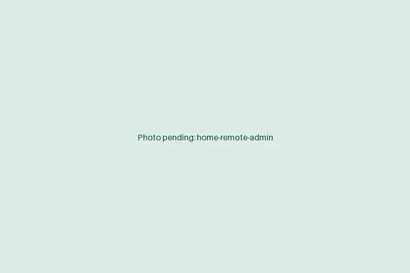

Remote medical admin staff for the work your front desk can't get to
Eligibility checks, prior auths, referrals and billing follow-up pile up while your team checks patients in. We place trained virtual staff inside your EMR and payer portals, working your hours, so the backlog clears and the desk can focus on the person in front of it.
Book a discovery callA short call. We look at one workflow and tell you plainly whether remote staff is a fit.

Eligibility & BenefitsVerification summary · Office visit
REF EV-0000-SMPL
Page 1 of 1
- Patient
- SAMPLE, PATIENT A
- DOB
- 01/01/1980
- Payer
- Example Mutual Health
- Member ID
- XSM 000 000 001
- Plan
- Choice PPO 2500
- Coverage
- ACTIVE eff. 01/01/2026
- Copay, PCP
- $25.00
- Copay, specialist
- $50.00
- Deductible, individual
- $2,500.00 · met $1,840.00 · remaining $660.00
- Coinsurance
- 20% after ded.
- Out-of-pocket max
- $6,000 · met $2,210
Verified via payer portal and call
Ref # SMPL-1142 · 09/22/2026 07:48 AM CT
Noted in EMR by remote verifier A.K.
The problem
Your front desk is doing three jobs at once
Checking in patients, answering phones and working payer portals all land on the same few people. Something gives, and it's usually the work nobody sees until a claim denies or a procedure gets pushed.
We don't replace your team. We take the screen-based work that can be done from anywhere, so the people in the building can do the work that can't.
- About 2 weeks
- From kickoff to a trained assistant working live in your systems.
- [STAT]
- [STAT: e.g. avg. reduction in eligibility denials for practices using verification]
- [STAT]
- [STAT: e.g. staff hours returned to the front desk per week]
Solutions
Five services, staffed separately or together
Each one is run by people trained on that work and on your systems. Start with the queue that hurts most.
| Service | Takes on | Best for |
|---|---|---|
| Insurance Verification | Eligibility, benefits, copays and deductibles confirmed before each visit and noted in your EMR. | Front desks with long check-in lines or rising eligibility denials. |
| Prior Authorization | Requirement checks, submissions, payer follow-up, peer-to-peer booking and appeals. | Specialty practices where auths hold up imaging, procedures or drugs. |
| Virtual Medical Assistants | Scheduling, chart prep, refill requests, portal messages, forms and recalls. | Clinics whose MAs are split between rooming and the inbox. |
| Referral Management | Inbound and outbound referrals tracked from intake to consult note. | Practices that send or receive referrals by fax and lose track of them. |
| Medical Billing Support | Charge entry, claim scrubbing, payment posting, denial follow-up and A/R cleanup. | Billing teams that are behind, or practices checking on an outside vendor. |
How we start
From first call to live work in about two weeks
- Day 1
Discovery call
We look at your volume, systems and the workflow you want to hand off.
- Days 2 to 4
Workflow map and quote
You get a written outline of the tasks, hand-offs and staffing, with a fixed monthly price.
- Week 2
Training in your systems
Your assistant learns your EMR, payers and rules, then works live tasks under supervision.
- Go-live
Daily work, weekly review
The queue is theirs. You get one point of contact and a weekly check-in.
Security
Your patient data stays where it already is
Remote doesn't mean your records travel. Our staff log in to your systems, under your rules, and nothing comes back out.
- Access through your own EMRStaff work in your EMR, PM system and payer portals, never in a copy.
- No local storageNothing is saved on staff machines, in email or in personal cloud drives.
- No printing or downloadsBoth are disabled at the workstation, along with USB storage.
- Managed credentialsNamed logins you issue, set to the permissions you choose and revoked when someone moves on.
- Signed BAAA Business Associate Agreement is in place before the first login.
Who it's for
Built for practice managers and physician owners
If you run the office, you already know which queue is behind. We're most useful when:
- You're an independent or physician-owned practice without a large back office.
- You run several locations and want the same process at each front desk.
- Your specialty lives on prior auths: orthopedics, cardiology, imaging, oncology, GI or pain management.
- You've lost staff and can't wait months to hire and train replacements.
Insights
Notes from the front office
Why claim denials start at the front desk
Eligibility and registration errors are among the most common reasons claims come back. Most of them can be caught before the visit.
A prior authorization tracking log your team will actually keep
Auths go missing between the order and the schedule. A shared log with a handful of fields and a fixed follow-up rhythm closes the gap.
Before you outsource front-office work: a practice manager's checklist
Remote staff can take real work off your desk, but only if you decide a few things up front. Use this list before you sign anything.
Tell us where the backlog is
Bring one workflow that's behind. We'll map it with you, tell you whether remote staff can take it, and quote it in writing.
Book a discovery call